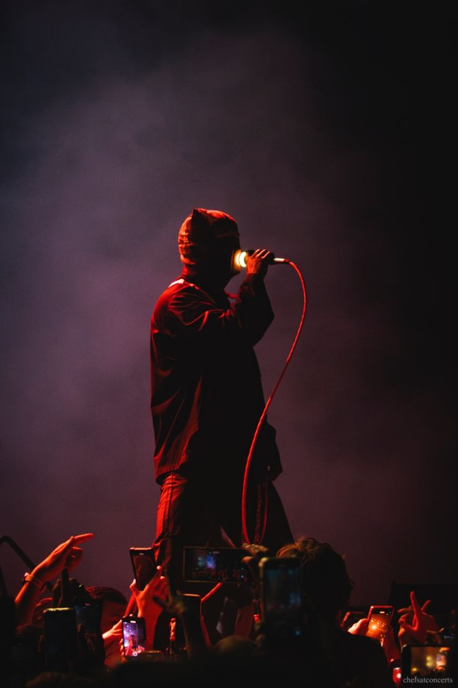
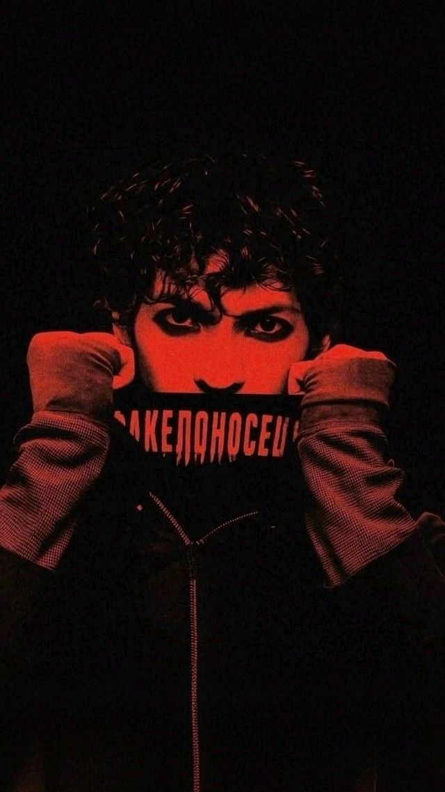

Você conhece essa banda?
Você tem um bom gosto! Como você ja sabe Twenty One Pilots (estilizado como Twenty Øne Piløts)[1] é um duo americano originário de Columbus, Ohio. A banda foi formada em 2009 pelo vocalista Tyler Joseph junto com Nick Thomas e Chris Salih, ambos saíram da banda em 2011. Após a partida dos dois integrantes, a banda é composta desde então por Tyler e Josh Dun.[2] Eles lançaram dois álbuns independentes, Twenty One Pilots, em 2009 e Regional at Best, em 2011, antes de assinarem com a gravadora Fueled by Ramen, em 2012. Seu primeiro álbum com esta gravadora, Vessel, foi lançado em 2013 e se tornou o segundo álbum da banda e na história em que cada faixa recebeu pelo menos uma certificação de ouro, fazendo do Twenty One Pilots a primeira banda na história da música a ter cada canção em dois álbuns a ganhar prêmios de ouro ou platina.
Tu é muito é doido! Para voçê que não sabe Twenty One Pilots (estilizado como Twenty Øne Piløts)[1] é um duo americano originário de Columbus, Ohio. A banda foi formada em 2009 pelo vocalista Tyler Joseph junto com Nick Thomas e Chris Salih, ambos saíram da banda em 2011. Após a partida dos dois integrantes, a banda é composta desde então por Tyler e Josh Dun.[2] Eles lançaram dois álbuns independentes, Twenty One Pilots, em 2009 e Regional at Best, em 2011, antes de assinarem com a gravadora Fueled by Ramen, em 2012. Seu primeiro álbum com esta gravadora, Vessel, foi lançado em 2013 e se tornou o segundo álbum da banda e na história em que cada faixa recebeu pelo menos uma certificação de ouro, fazendo do Twenty One Pilots a primeira banda na história da música a ter cada canção em dois álbuns a ganhar prêmios de ouro ou platina.



A banda foi formada em 2009, em Columbus, Ohio, por amigos de faculdade. Eles eram: Tyler Joseph, Nick Thomas, Chris Salih.[6] Tyler Joseph teve a ideia do nome da banda enquanto estudava "All My Sons", uma peça de Arthur Miller que contava a história de um homem que deve decidir o que é melhor para sua família depois de causar a morte de 21 pilotos durante a Segunda Guerra Mundial, porque ele conscientemente os enviou peças defeituosas para o bem de seu negócio. Josh Dun explicou que esta história de dilema moral foi a inspiração para o nome da banda. [7] Em 29 de dezembro de 2009, eles lançaram seu álbum de estreia, intitulado Twenty One Pilots, e começaram um tour em Ohio.
Em 2010, a banda lançou duas faixas inéditas oficialmente em sua conta no SoundCloud.[8] Estas faixas incluíram um spin-off original de "Time to Say Goodbye", de Andrea Bocelli e Sarah Brightman, e um cover de "Jar of Hearts", de Christina Perri. Eles estavam originalmente disponíveis para download gratuito, embora a opção tenha sido removida desde então.
Chris Salih saiu da banda em 8 de maio de 2011, e Nick Thomas também saiu em aproximadamente um mês depois, em 3 de junho de 2011. Os dois se despediram dos fãs na página oficial da banda no Facebook.[9][10] Então, Tyler Joseph se juntou a Josh Dun, ex-baterista da banda House of Heroes.[6][11]
Seu segundo álbum, intitulado Regional at Best, foi lançado 08 de julho de 2011, com a nova formação constituída apenas por Tyler Joseph e Josh Dun. Em novembro de 2011, eles fizeram um show que esgotou ingressos na Columbus' Newport Music Hall, atraindo a atenção de várias gravadoras.[12]

Embora muitas gravadoras tenham brigado pela banda, Tyler Joseph e Josh Dun decidiram assinar com a Atlantic Records pelo subsidiário Fueled by Ramen. Em 11 de fevereiro de 2012, a banda lançou um vídeo-clipe no YouTube para uma música "Goner", lançada previamente no álbum solo "No pun intended" lançado em 2007 por Tyler Joseph, vocalista da banda. "Goner" foi reescrita e re-gravada para ser lançada no álbum Blurryface, em 2015.
Em abril de 2012, em um show com ingressos esgotados no Lifestyle Communities Pavilion, eles anunciaram seu contrato com a gravadora subsidiária da Atlantic Records, Fueled by Ramen.[6] Em 17 de julho de 2012, eles lançaram sua primeira gravação na Fueled by Ramen em forma de um EP com três músicas, intitulado Three Songs. Em agosto de 2012, eles embarcaram em uma pequena turnê com Neon Trees e Walk the Moon.[12] Eles trabalharam com Greg Wells, produtor de Adele e Katy Perry em seu primeiro álbum full-length na gravadora Fueled by Ramen, Vessel,[13] lançado no dia 8 de janeiro de 2013.
Em 12 de novembro de 2012, o clipe oficial da música "Holding on to You" foi lançado no YouTube. Sequencialmente, em 2013, o clipe das músicas "Guns for Hands" e "Car Radio" foram lançados no dia 7 de janeiro e 19 de abril, respectivamente. Em maio de 2013, a banda Fall Out Boy anunciou que Twenty One Pilots estaria em uma turnê abrindo shows no Save Rock and Roll no outono seguinte.[14] Em 8 de agosto de 2013, Twenty One Pilots apresentou "House of Gold" em Conan na noite de sua estreia. Em 2 de outubro de 2013, o clipe da música foi lançado no YouTube.
Atualmente:
Em 15 de fevereiro de 2024, a arte da capa de Vessel, Blurryface, Trench e Scaled and Icy foram atualizadas para serem parcialmente cobertas por fitas vermelhas nas plataformas de streaming.[44] Várias pessoas postaram nas redes sociais que haviam recebido correspondências da banda, e um novo logotipo foi revelado através de outdoors e pôsteres em vários locais do mundo nos dias seguintes, sugerindo um novo álbum que estava por vir.[45][46] Em 22 de fevereiro, um vídeo narrado foi lançado nas plataformas de mídia social da banda, onde detalhes sobre a história dos três álbuns anteriores foram confirmados em antecipação ao próximo álbum.[47][48] No dia 28 de fevereiro, a banda anunciou o lançamento de um novo single intitulado "Overcompensate",[49] que foi lançado acompanhado de um videoclipe no dia seguinte.[50] Junto do single, foi anunciado o próximo álbum, Clancy, com o lançamento previsto para o dia 17 de maio.[51]
Doubt (demo)
.webp)